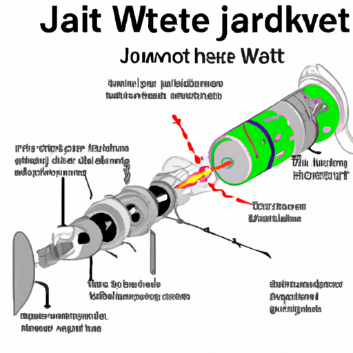

AI Client
Many apps across all sorts of scenarios might significantly benefit from some artificial intelligence (AI). Writing your own AI system is a big task, an alternative is a subscription to an AI system, accessible through networked API calls. This section shows how to use some Boost libraries in a client app to send requests to ChatGPT, and receive and process responses.
Libraries
Here are the libraries that are most directly applicable to writing a client app:
-
Boost.Json: An efficient library for parsing, serializing, and manipulating JSON data. This is useful specifically in client-server communication and web services.
-
Boost.Beast: This is a library built on top of Boost.Asio that provides implementations of HTTP and WebSockets.
-
Boost.Asio: A cross-platform C++ library for network and low-level I/O programming. It provides a consistent asynchronous model using a modern C++ approach. Boost.Asio supports a variety of network protocols, including ICMP, TCP, and UDP.
- Notes
-
The code in this tutorial was written and tested using Microsoft Visual Studio (Visual C++ 2022, Console App project) with Boost version 1.88.0. In order to get the example to run, you will need an Open AI API account in order to obtain an API key, Organization Id, and credits for API calls. There may be usage fees involved.
AI Text Client
The following code enables the writing of queries to a command window prompt, and sends them to ChatGPT for processing. For debugging and educational purposes the HTTP request is displayed, but masking the API key and Organization Id.
Prerequisites
-
You will need an Open AI API account, where you can obtain both the API key and Organization Id. You will also need to ensure you have credits for API calls.
-
Ensure your CA certificates are up to date, and you know the path to
cacert.pem.
We use the features of Boost.Beast and Boost.Json to aid in the writing of the client:
#include <boost/beast/core.hpp>
#include <boost/beast/ssl.hpp>
#include <boost/beast/http.hpp>
#include <boost/beast/version.hpp>
#include <boost/json.hpp>
#include <iostream>
namespace beast = boost::beast; // Common Boost.Beast types
namespace http = beast::http; // HTTP-specific types
namespace net = boost::asio; // Networking (Asio)
namespace ssl = boost::asio::ssl; // SSL/TLS
namespace json = boost::json; // JSON handling
using tcp = boost::asio::ip::tcp; // TCP networking
//------------------------------------------------------------------------------
// Function to query the OpenAI Chat API
//------------------------------------------------------------------------------
std::string query_chatgpt(
const std::string& api_key, // OpenAI API key (Bearer token)
const std::string& org_id, // OpenAI Organization ID
const std::string& user_prompt) // User's question/prompt
{
const std::string host = "api.openai.com";
const std::string port = "443";
const std::string target = "/v1/chat/completions"; // Chat API endpoint
net::io_context ioc; // Asio I/O context for event-driven networking
//-------------------------------
// SSL/TLS setup
//-------------------------------
ssl::context ctx{ ssl::context::sslv23_client }; // Use TLS client
ctx.set_default_verify_paths(); // Use system's CA certs
ctx.set_verify_mode(ssl::verify_peer); // Verify server identity
// Create an SSL stream (TCP + TLS)
beast::ssl_stream<beast::tcp_stream> stream{ ioc, ctx };
// Enable Server Name Indication (SNI) for TLS
if (!SSL_set_tlsext_host_name(stream.native_handle(), host.c_str()))
throw beast::system_error{
beast::error_code(static_cast<int>(::ERR_get_error()),
net::error::get_ssl_category()) };
//-------------------------------
// Connect to OpenAI server
//-------------------------------
tcp::resolver resolver{ ioc };
auto const results = resolver.resolve(host, port); // DNS lookup
beast::get_lowest_layer(stream).connect(results); // TCP connect
stream.handshake(ssl::stream_base::client); // TLS handshake
//-------------------------------
// Build the JSON request body
//-------------------------------
json::array messages;
messages.push_back({ {"role", "user"}, {"content", user_prompt} });
json::object body;
body["model"] = "gpt-4o-mini"; // Choose the OpenAI model
body["messages"] = messages;
std::string body_str = json::serialize(body); // Convert JSON to string
//-------------------------------
// Build HTTP POST request
//-------------------------------
http::request<http::string_body> req{ http::verb::post, target, 11 }; // HTTP/1.1
req.set(http::field::host, host);
req.set(http::field::user_agent, BOOST_BEAST_VERSION_STRING);
req.set(http::field::authorization, "Bearer " + api_key); // API key
req.set("OpenAI-Organization", org_id); // Org ID
req.set(http::field::content_type, "application/json");
req.set(http::field::accept, "application/json");
req.body() = body_str;
req.prepare_payload(); // Set Content-Length header automatically
// ===== RAW HTTP REQUEST DUMP (with masked API key) =====
{
http::request<http::string_body> masked_req = req;
masked_req.set(http::field::authorization, "Bearer ***********************");
masked_req.set("OpenAI-Organization", "***********************");
std::cout << "\n===== RAW HTTP REQUEST =====\n";
std::cout << masked_req << "\n";
std::cout << "===== END RAW HTTP REQUEST =====\n\n";
}
//-------------------------------
// Send request & read response
//-------------------------------
http::write(stream, req); // Send request
beast::flat_buffer buffer; // Buffer for reading
http::response<http::string_body> res; // HTTP response container
http::read(stream, buffer, res); // Read full response
//-------------------------------
// Shutdown TLS connection
//-------------------------------
beast::error_code ec;
stream.shutdown(ec);
if (ec == net::error::eof || ec == ssl::error::stream_truncated)
ec.assign(0, ec.category()); // Ignore harmless shutdown errors
if (ec)
throw beast::system_error{ ec };
//-------------------------------
// Parse JSON response
//-------------------------------
auto parsed = json::parse(res.body());
// Check for "choices" array in response
if (parsed.as_object().if_contains("choices")) {
auto& choices = parsed.at("choices").as_array();
if (!choices.empty()) {
auto& msg = choices[0].as_object().at("message").as_object();
if (msg.if_contains("content")) {
return std::string(msg.at("content").as_string().c_str());
}
}
return "[No content found in choices]";
}
// If "error" present, show error message
else if (parsed.as_object().if_contains("error")) {
auto& err = parsed.at("error").as_object();
return "[API Error] " + std::string(err.at("message").as_string().c_str());
}
else {
return "[Unexpected API response: " + res.body() + "]";
}
}
//------------------------------------------------------------------------------
// MAIN FUNCTION
//------------------------------------------------------------------------------
int main() {
// Your OpenAI API key & Organization ID
const std::string api_key = "YOUR OPEN AI API KEY";
const std::string org_id = "YOUR OPEN AI ORGANIZATION ID";
_putenv_s("SSL_CERT_FILE", "PATH TO YOUR CA CERTIFICATE\\cacert.pem");
try {
while (true) {
// Ask user for input
std::string prompt;
std::cout << "\nEnter prompt (or type 'exit' to quit): ";
std::getline(std::cin, prompt);
// Exit loop if user types "exit"
if (prompt == "exit")
break;
// Call OpenAI API
std::string response = query_chatgpt(api_key, org_id, prompt);
// Show model's reply
std::cout << "ChatGPT: " << response << "\n";
}
}
catch (const std::exception& e) {
// Handle and display any errors
std::cerr << "Error: " << e.what() << "\n";
}
return 0;
}Run the program. If you get an error, most center around authorization issues (valid API key and Organization Id).
You should be able to write a series of text queries:
Enter prompt (or type 'exit' to quit): Can you sort the following numbers into ascending order: 14 -8 0 3.5 99 3.14159 ?
===== RAW HTTP REQUEST =====
POST /v1/chat/completions HTTP/1.1
Host: api.openai.com
User-Agent: Boost.Beast/357
Content-Type: application/json
Accept: application/json
Content-Length: 144
Authorization: Bearer ***********************
OpenAI-Organization: ***********************
{"model":"gpt-4o-mini","messages":[{"role":"user","content":"Can you sort the following numbers into ascending order: 14 -8 0 3.5 99 3.14159"}]}
===== END RAW HTTP REQUEST =====
ChatGPT: Sure! Here are the numbers sorted in ascending order:
-8, 0, 3.14159, 3.5, 14, 99
Enter prompt (or type 'exit' to quit): What is the height of Vesuvius?
===== RAW HTTP REQUEST =====
POST /v1/chat/completions HTTP/1.1
Host: api.openai.com
User-Agent: Boost.Beast/357
Content-Type: application/json
Accept: application/json
Content-Length: 96
Authorization: Bearer ***********************
OpenAI-Organization: ***********************
{"model":"gpt-4o-mini","messages":[{"role":"user","content":"What is the height of Vesuvius?"}]}
===== END RAW HTTP REQUEST =====
ChatGPT: Mount Vesuvius has an elevation of about 1,281 meters (4,203 feet) above sea level. It is known for its dramatic eruptions and is located near Naples, Italy.
Enter prompt (or type 'exit' to quit): exitSecure AI Text and ASCII Diagram Client
We can improve on the security of the requests by using HTTPS (via SSL), rather than HTTP. Also, we have added in the feature of requesting ASCII diagrams:
#include <boost/beast/core.hpp>
#include <boost/beast/http.hpp>
#include <boost/beast/ssl.hpp>
#include <boost/beast/version.hpp>
#include <boost/json.hpp>
#include <iostream>
namespace beast = boost::beast;
namespace http = beast::http;
namespace net = boost::asio;
namespace ssl = boost::asio::ssl;
namespace json = boost::json;
using tcp = boost::asio::ip::tcp;
int main()
{
try
{
//-----------------------------------------
// USER CONFIGURATION
//-----------------------------------------
const std::string host = "api.openai.com";
const std::string port = "443";
const std::string target = "/v1/chat/completions";
const int version = 11; // HTTP/1.1
const std::string api_key = "YOUR API KEY";
const std::string org_id = "YOUR ORGANIZATION ID";
_putenv_s("SSL_CERT_FILE", "PATH TO YOUR CA CERTIFICATES\\cacert.pem");
// Optionally, enter your project Id, if you have one.
const std::string project_id = "";
//-----------------------------------------
// SSL/TLS Context
//-----------------------------------------
ssl::context ctx(ssl::context::tls_client);
ctx.set_default_verify_paths();
ctx.set_verify_mode(ssl::verify_peer);
//-----------------------------------------
// I/O Context
//-----------------------------------------
net::io_context ioc;
//-----------------------------------------
// Resolver: hostname → TCP endpoint
//-----------------------------------------
tcp::resolver resolver(ioc);
auto const results = resolver.resolve(host, port);
//-----------------------------------------
// SSL stream over TCP socket
//-----------------------------------------
beast::ssl_stream<tcp::socket> stream(ioc, ctx);
if (!SSL_set_tlsext_host_name(stream.native_handle(), host.c_str()))
throw beast::system_error(
beast::error_code(static_cast<int>(::ERR_get_error()), net::error::get_ssl_category()),
"Failed to set SNI hostname");
//-----------------------------------------
// Connect and handshake
//-----------------------------------------
net::connect(stream.next_layer(), results.begin(), results.end());
stream.handshake(ssl::stream_base::client);
//-----------------------------------------
// Loop for user input
//-----------------------------------------
std::string user_input;
while (true)
{
std::cout << "\nEnter your request (ASCII diagram or text) or 'exit': ";
std::getline(std::cin, user_input);
if (user_input == "exit")
break;
//-----------------------------------------
// JSON request body
//-----------------------------------------
std::string body =
"{"
"\"model\": \"gpt-4o-mini\","
"\"messages\": ["
"{\"role\": \"user\", \"content\": \"" + user_input + "\"}"
"],"
"\"temperature\": 0"
"}";
//-----------------------------------------
// HTTP POST
//-----------------------------------------
http::request<http::string_body> req{ http::verb::post, target, version };
req.set(http::field::host, host);
req.set(http::field::content_type, "application/json");
req.set(http::field::authorization, "Bearer " + api_key);
req.set("OpenAI-Organization", org_id);
if (!project_id.empty()) {
req.set("OpenAI-Project", project_id);
}
req.body() = body;
req.prepare_payload();
//-----------------------------------------
// Send request
//-----------------------------------------
http::write(stream, req);
//-----------------------------------------
// Receive response
//-----------------------------------------
beast::flat_buffer buffer;
http::response<http::string_body> res;
http::read(stream, buffer, res);
//-----------------------------------------
// Parse JSON and extract the assistant's text
//-----------------------------------------
try {
json::value jv = json::parse(res.body());
std::string output;
if (jv.is_object()) {
auto& obj = jv.as_object();
if (obj.contains("choices") && obj["choices"].is_array()) {
auto& choices = obj["choices"].as_array();
if (!choices.empty()) {
auto& msg = choices[0].as_object()["message"].as_object();
if (msg.contains("content")) {
output = msg["content"].as_string().c_str();
}
}
}
}
// Print raw output so ASCII art formatting is preserved
std::cout << "\nAssistant Response:\n" << output << "\n";
}
catch (const std::exception& e) {
std::cerr << "Failed to parse JSON: " << e.what() << "\n";
std::cerr << "Raw response:\n" << res.body() << "\n";
}
}
//-----------------------------------------
// Graceful SSL shutdown
//-----------------------------------------
beast::error_code ec;
stream.shutdown(ec);
if (ec == net::error::eof) ec = {};
if (ec) throw beast::system_error{ ec };
}
catch (std::exception const& e)
{
std::cerr << "Error: " << e.what() << "\n";
return EXIT_FAILURE;
}
return EXIT_SUCCESS;
}Run the program. Notice that the ASCII diagram requests have to be fairly simple to avoid an error, and that the diagrams can be clunky representations!
Enter your request (ASCII diagram or text) or 'exit': Can you draw an ASCII diagram of a speedboat?
Assistant Response:
Sure! Here's a simple ASCII representation of a speedboat:
```
__/__
_____/_____|_____
\ /
~~~~~~~~~~~~~~~~~~~~~
```
Feel free to modify it or let me know if you need something different!
Enter your request (ASCII diagram or text) or 'exit': Can you draw an ASCII diagram of an HTTPS request and response?
Assistant Response:
Certainly! Below is a simple ASCII diagram representing an HTTPS request and response cycle.
```
Client (Browser) Server
| |
| ----------- HTTPS Request -------> |
| |
| |
| <--------- HTTPS Response -------- |
| |
```
### Breakdown of the Diagram:
1. **Client (Browser)**: This is the user's web browser or application that initiates the request.
2. **Server**: This is the web server that hosts the website or service the client is trying to access.
3. **HTTPS Request**: This is the request sent from the client to the server. It typically includes:
- HTTP method (GET, POST, etc.)
- URL
- Headers (e.g., User-Agent, Accept, etc.)
- Body (for POST requests)
4. **HTTPS Response**: This is the response sent from the server back to the client. It typically includes:
- Status code (e.g., 200 OK, 404 Not Found)
- Headers (e.g., Content-Type, Content-Length, etc.)
- Body (the requested resource, such as HTML, JSON, etc.)
### Note:
- HTTPS (Hypertext Transfer Protocol Secure) ensures that the data exchanged between the client and server is encrypted for security.
- The arrows indicate the direction of data flow, with the request going from the client to the server and the response going back from the server to the client.
Enter your request (ASCII diagram or text) or 'exit': What is the capital of France?
Assistant Response:
The capital of France is Paris.
Enter your request (ASCII diagram or text) or 'exit': Can you draw me an ASCII diagram of the Eiffel Tower?
Assistant Response:
Sure! Here's a simple ASCII representation of the Eiffel Tower:
```
/\
/ \
/ \
/ \
/ \
/ \
/ \
/______________\
||||
||||
||||
||||
||||
||||
||||
||||
||||
```
This is a basic representation, but I hope you like it!
Enter your request (ASCII diagram or text) or 'exit': exitClearly AI produced ASCII diagrams have their limitations!
AI Generated Image Client
Let’s improve on those ASCII diagrams by calling the images generation endpoint (/v1/images/generations), taking a text description of the required image, and returning JSON containing a URL with the download link to the image.
#include <boost/beast/core.hpp> // Core Beast utilities
#include <boost/beast/ssl.hpp> // SSL/TLS support for Beast
#include <boost/beast/http.hpp> // HTTP request/response
#include <boost/beast/version.hpp> // Version macros
#include <boost/json.hpp> // Boost.JSON for parsing API responses
#include <iostream>
#include <fstream>
namespace beast = boost::beast; // From <boost/beast.hpp>
namespace http = beast::http; // From <boost/beast/http.hpp>
namespace net = boost::asio; // From <boost/asio.hpp>
namespace ssl = boost::asio::ssl; // From <boost/asio/ssl.hpp>
namespace json = boost::json; // From <boost/json.hpp>
using tcp = boost::asio::ip::tcp; // TCP protocol abstraction
int main()
{
try
{
//-----------------------------------------
// USER CONFIGURATION
//-----------------------------------------
const std::string host = "api.openai.com"; // OpenAI API host
const std::string port = "443"; // HTTPS (TLS) port
const std::string target = "/v1/images/generations"; // OpenAI endpoint for image generation
const int version = 11; // HTTP/1.1 (11 = 1.1, 10 = 1.0)
// Replace these with your actual credentials
const std::string api_key = "<YOUR_API_KEY>";
const std::string org_id = "<YOUR_ORG_ID>"; // Optional: can be blank
// Path to a certificate bundle (needed so TLS can verify api.openai.com is trusted)
_putenv_s("SSL_CERT_FILE", "<YOUR_CERT_PATH>\\cacert.pem");
//-----------------------------------------
// SSL/TLS CONTEXT
//-----------------------------------------
ssl::context ctx(ssl::context::tls_client); // Create a client-side TLS context
ctx.set_default_verify_paths(); // Use system default trusted certificates
ctx.set_verify_mode(ssl::verify_peer); // Verify server certificate authenticity
//-----------------------------------------
// I/O CONTEXT
//-----------------------------------------
net::io_context ioc; // Asynchronous event loop (needed for networking)
//-----------------------------------------
// RESOLVE HOSTNAME → TCP ENDPOINT
//-----------------------------------------
tcp::resolver resolver(ioc);
auto const results = resolver.resolve(host, port);
//-----------------------------------------
// CREATE SSL STREAM WRAPPED AROUND TCP SOCKET
//-----------------------------------------
beast::ssl_stream<tcp::socket> stream(ioc, ctx);
// Enable SNI (Server Name Indication), required by many servers including OpenAI
if (!SSL_set_tlsext_host_name(stream.native_handle(), host.c_str()))
throw beast::system_error(
beast::error_code(static_cast<int>(::ERR_get_error()), net::error::get_ssl_category()),
"Failed to set SNI hostname");
//-----------------------------------------
// CONNECT TO SERVER AND HANDSHAKE TLS
//-----------------------------------------
net::connect(stream.next_layer(), results.begin(), results.end()); // TCP connect
stream.handshake(ssl::stream_base::client); // TLS handshake
//-----------------------------------------
// MAIN LOOP: ASK USER FOR PROMPT
//-----------------------------------------
std::string user_input;
while (true)
{
std::cout << "\nEnter an image request (e.g. 'A sunset over the mountain') or 'exit': ";
std::getline(std::cin, user_input);
if (user_input == "exit")
break; // Exit program cleanly
//-----------------------------------------
// BUILD JSON REQUEST BODY
//-----------------------------------------
json::object body;
body["prompt"] = user_input; // User's text description
body["n"] = 1; // Number of images to generate
body["size"] = "512x512"; // Image resolution
body["response_format"] = "url"; // We want a downloadable URL back
std::string body_str = json::serialize(body);
//-----------------------------------------
// CREATE HTTP POST REQUEST
//-----------------------------------------
http::request<http::string_body> req{ http::verb::post, target, version };
req.set(http::field::host, host);
req.set(http::field::content_type, "application/json"); // JSON request body
req.set(http::field::authorization, "Bearer " + api_key); // API key
req.set("OpenAI-Organization", org_id); // Optional header
req.body() = body_str; // JSON as request body
req.prepare_payload(); // Update headers (like Content-Length)
//-----------------------------------------
// SEND REQUEST TO OPENAI
//-----------------------------------------
http::write(stream, req);
//-----------------------------------------
// RECEIVE RESPONSE
//-----------------------------------------
beast::flat_buffer buffer; // Temporary storage for network data
http::response<http::string_body> res;
http::read(stream, buffer, res); // Read HTTP response into `res`
//-----------------------------------------
// PARSE JSON RESPONSE
//-----------------------------------------
try {
json::value jv = json::parse(res.body());
if (jv.is_object()) {
auto& obj = jv.as_object();
if (obj.contains("data")) {
auto& data = obj["data"].as_array();
if (!data.empty()) {
// Extract URL of generated image
std::string url = data[0].as_object()["url"].as_string().c_str();
std::cout << "\nDownload your image here:\n" << url << "\n";
}
}
}
}
catch (const std::exception& e) {
std::cerr << "Failed to parse JSON: " << e.what() << "\n";
std::cerr << "Raw response:\n" << res.body() << "\n";
}
}
//-----------------------------------------
// CLEANLY SHUTDOWN TLS CONNECTION
//-----------------------------------------
beast::error_code ec;
stream.shutdown(ec);
// Ignore common "truncated" shutdowns that happen when the peer closes first
if (ec == net::error::eof || ec == ssl::error::stream_truncated) {
ec = {};
}
if (ec) {
throw beast::system_error{ ec };
}
}
catch (std::exception const& e)
{
// If anything throws, report it
std::cerr << "Error: " << e.what() << "\n";
return EXIT_FAILURE;
}
return EXIT_SUCCESS;
}Run the program:
Enter an image request (e.g. 'A sunset over the mountains') or 'exit': A sunset over the mountain
Download your image here:
https://oaidalleapiprodscus.blob.core.windows.net/private/org-DOWNLOAD-LINK-DETAILSTry a stylized image:
Enter an image request (e.g. 'A sunset over the mountains') or 'exit': A cartoon image of a volcanic eruption
Download your image here:
https://oaidalleapiprodscus.blob.core.windows.net/private/org-DOWNLOAD-LINK-DETAILS
Try a more complex subject:
Enter an image request (e.g. 'A sunset over the mountains') or 'exit': A C++ computer programmer hard at work
Download your image here:
https://oaidalleapiprodscus.blob.core.windows.net/private/org-DOWNLOAD-LINK-DETAILS
Push the limits to reveal limitations:
Enter an image request (e.g. 'A sunset over the mountains') or 'exit': A diagram with text showing how a jet engine works
Download your image here:
https://oaidalleapiprodscus.blob.core.windows.net/private/org-DOWNLOAD-LINK-DETAILS
Clearly, asking for text annotations in this case was asking too much!
Enter an image request (e.g. 'A sunset over the mountains') or 'exit': exitNext Steps
Making requests to an AI model is fun. However, to be useful a lot of experimentation and honing of requests may well be necessary.
Consider updating the examples to tailor the requests to a particular scenario you have in mind. There are also speech-to-text, text-to-speech, and translation endpoints you might give a try.
For more information and examples on the use of Boost libraries in client/server connections, refer to Networking.